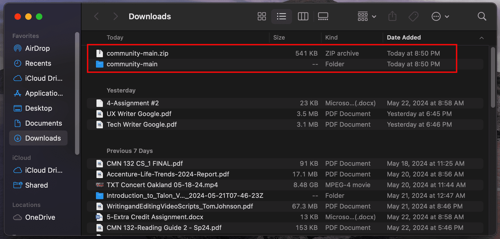
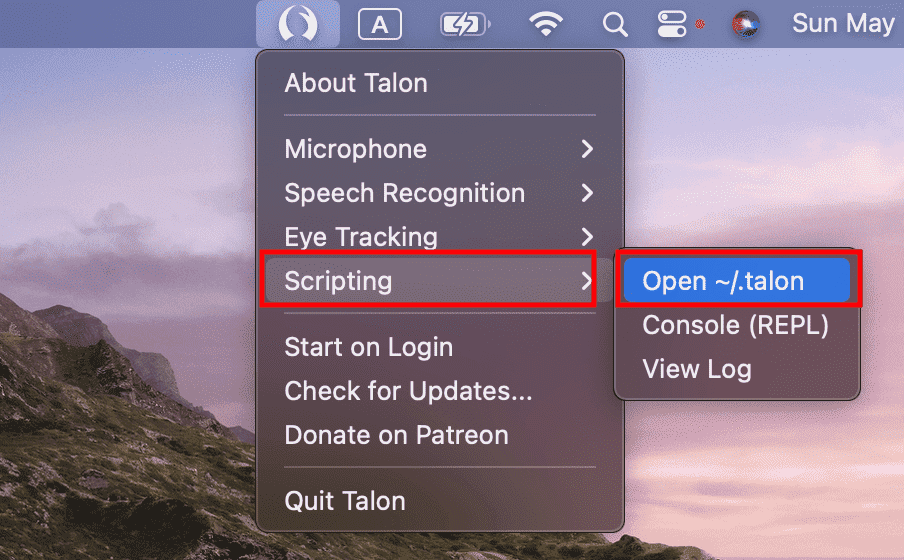
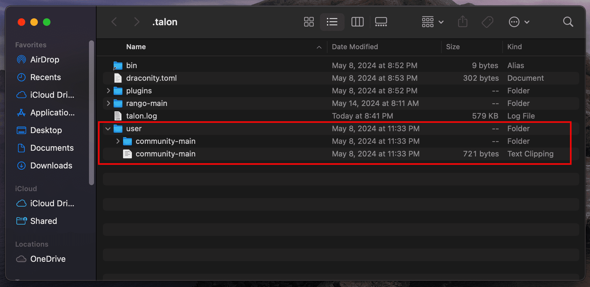

Once the download has completed, open Finder, go to Downloads, and double-click the community-main.zip to extract the voice command set's files.

Once extraction has completed, a community-main folder will appear in your Downloads. Keep your Downloads open because you will need this folder later.
Open Finder, go to Applications, and click on the Talon application.
Once the application has launched, click on the Talon icon in the menu bar at the top of your screen.
In the drop-down menu, go to Scripting and click Open ~/.talon.

In the .talon folder, drag the community-main folder from your Downloads into the user sub-folder.

Congratulations, you have successfully downloaded voice commands for Talon!Before you can use Talon with your voice, download a speech recognition engine for Talon.